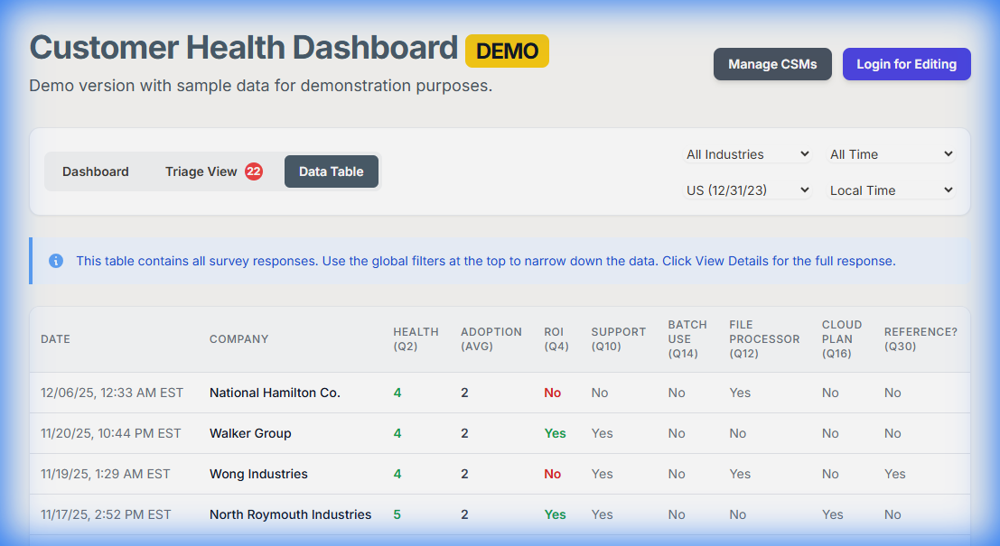
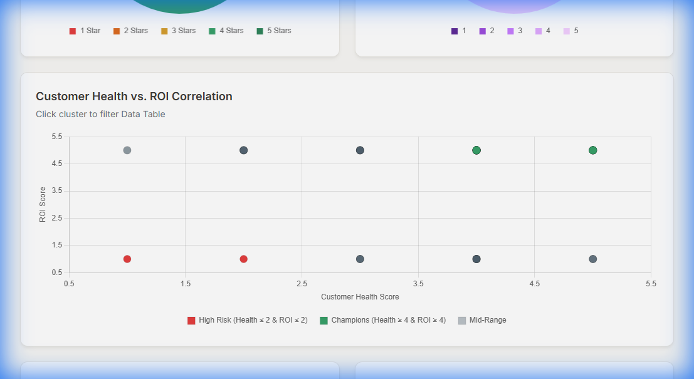

Visual Implementation
Triage & Workflow Management

Managers can filter by assignee and status to ensure no high-risk account slips through the cracks.
Granular Data Analysis

High-density data table supporting drill-down interactions and CSV export capabilities.
Correlations & Insights

Secondary visualizations analyzing the correlation between reported ROI and Happiness scores.
Page 2 of 2